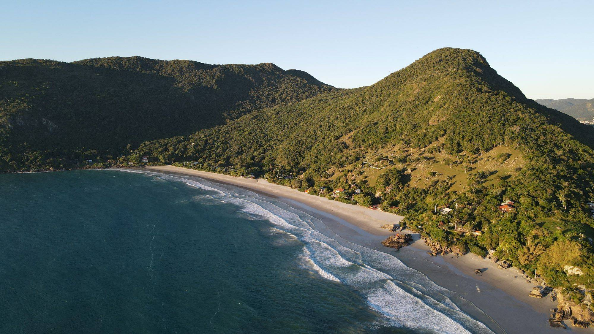
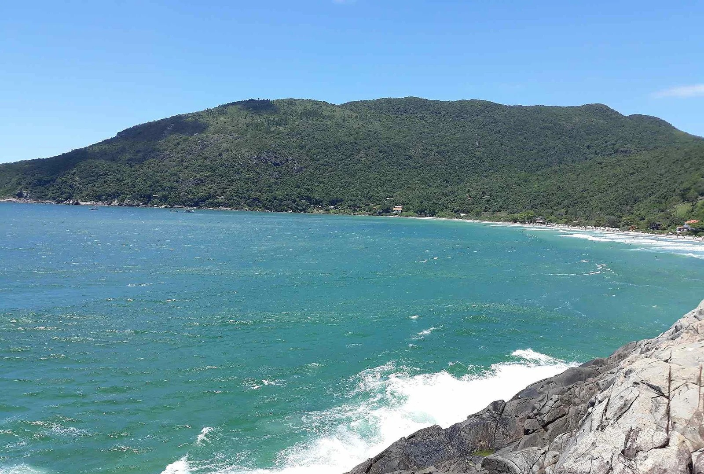
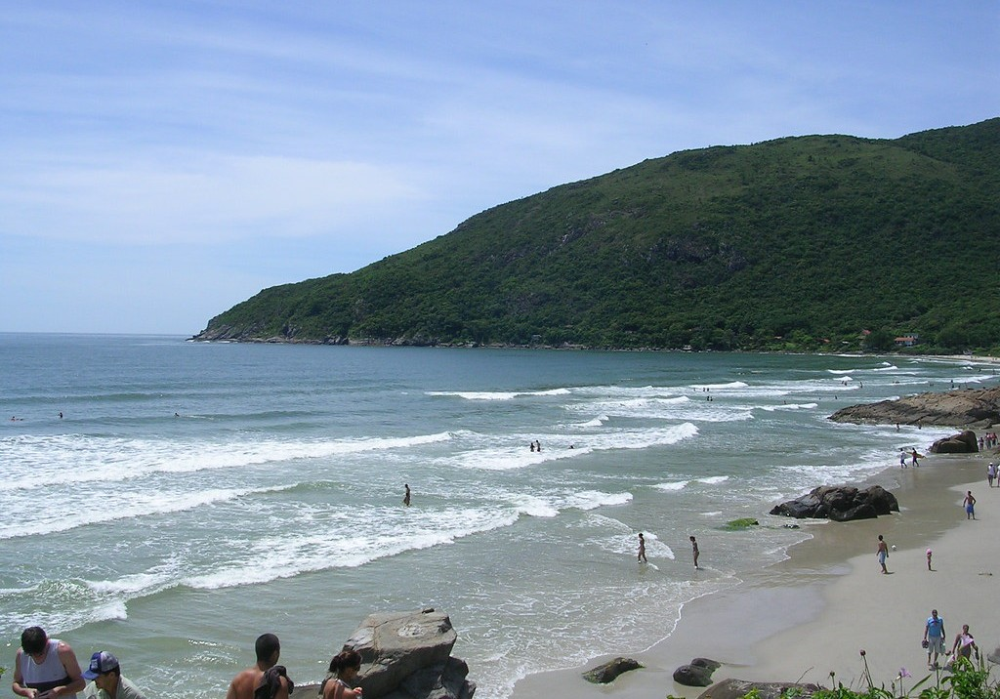

Presentación
Praia do Matadeiro es una de las playas más naturales y preservadas de Florianópolis. Se accede únicamente a pie, cruzando el puente desde Armação, lo que garantiza un ambiente tranquilo, sin tránsito vehicular y con fuerte conexión con la naturaleza.
- Ambiente: Salvaje y natural
- Público: Jóvenes, surfistas, aventureros
- Especial: Olas fuertes y paisaje intacto



Ubicación
Barrio: Sur de la isla — junto a Armação
Acceso: Solo peatonal desde Praia da Armação
Guía turística de Matadeiro
Playa natural
Playa preservada, sin acceso vehicular, ideal para quienes buscan tranquilidad.
Senderismo
Caminos naturales conectan Matadeiro con Armação, con vistas increíbles.
Surf tranquilo
Buenas olas en un ambiente relajado, menos concurrido que otras playas.
Contacto con la naturaleza
Ideal para desconectarse, descansar y disfrutar del entorno natural.